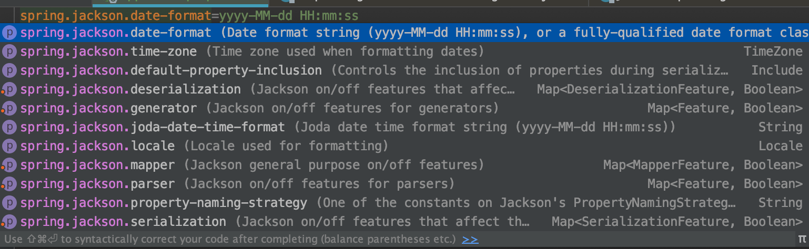
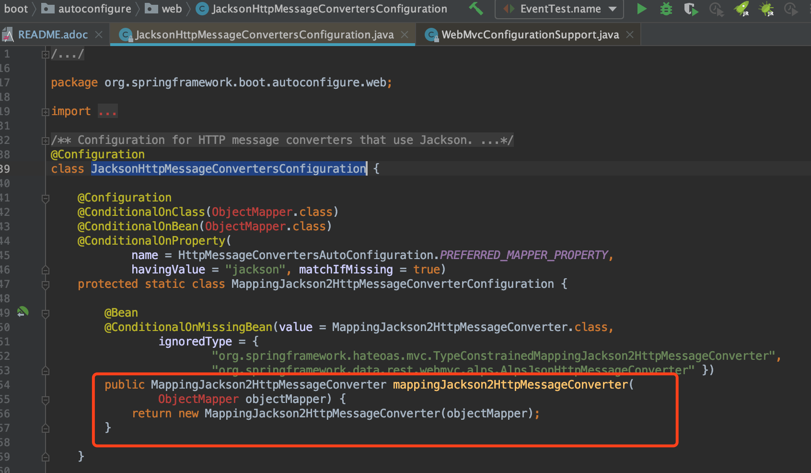
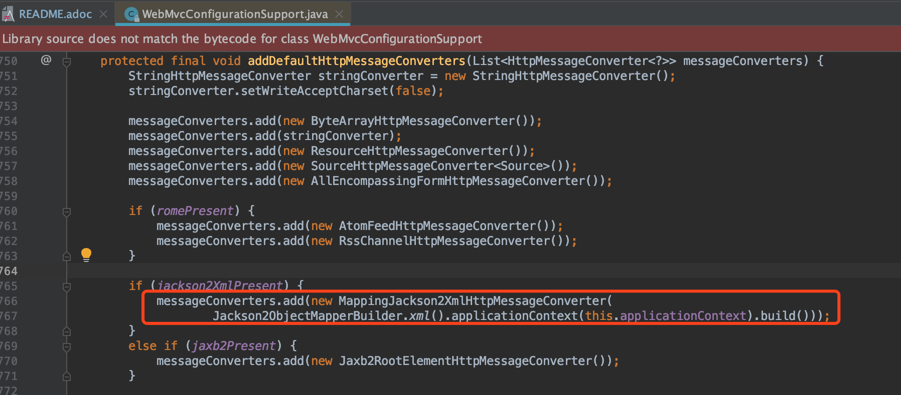
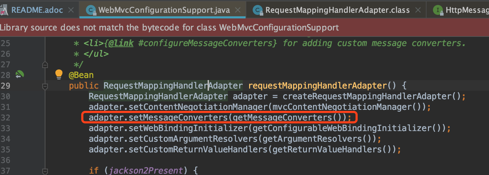
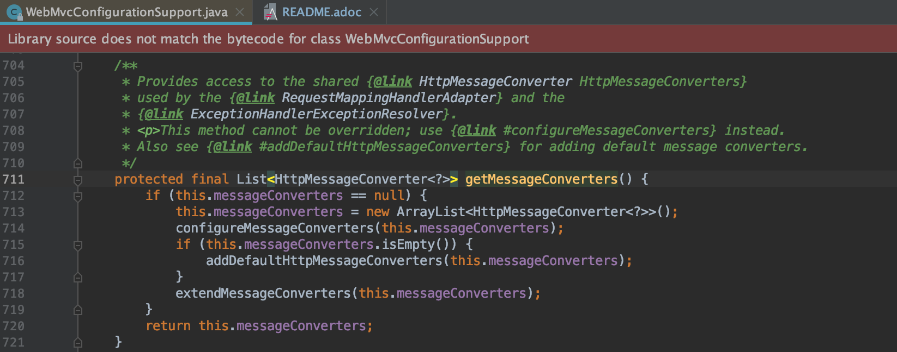
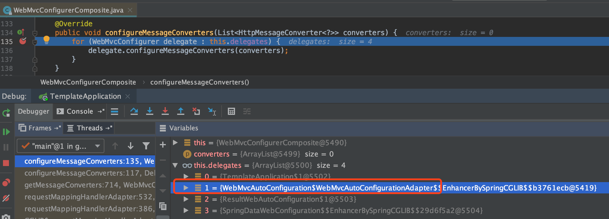
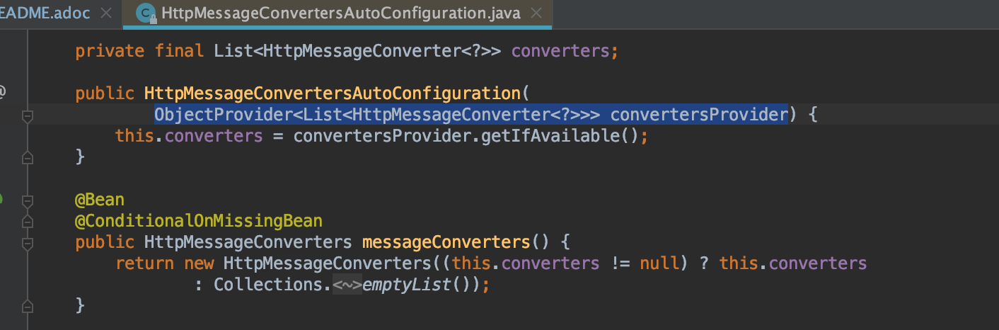
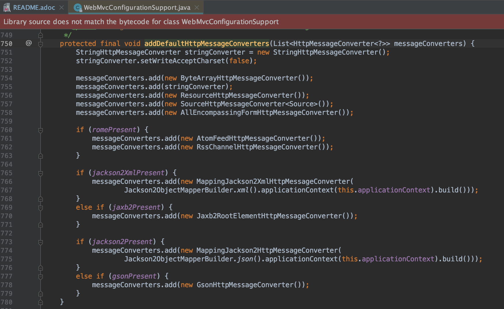

HttpMessageConverter
使用注解@ResponseBody输出JSON数据时，
配置日期格式为yyyy-MM-dd HH:mm:ss，
输出的是数值，配置没有生效。

通过调试，分析源码后，发现@ResponseBody所使用的MappingJackson2HttpMessageConverter，
与我们在上面配置使用的不是同一个。

Figure 1.
JacksonHttpMessageConvertersConfiguration中声明了配置使用的MappingJackson2HttpMessageConverter

Figure 2.
@ResponseBody所使用的MappingJackson2HttpMessageConverter源至WebMvcConfigurationSupport以下具体分析@ResponseBody使用的MappingJackson2HttpMessageConverter来源过程：

Figure 3. 注解
@EnableWebMvc会使用到DelegatingWebMvcConfiguration

Figure 4.
WebMvcConfigurationSupport中会创建RequestMappingHandlerAdapter

Figure 5.
WebMvcConfigurationSupport会创建HttpMessageConverter

Figure 6.
configureMessageConverters中会使用到WebMvcAutoConfigurationAdapter
Figure 7.
WebMvcAutoConfigurationAdapter会通过HttpMessageConverters获取HttpMessageConverter

Figure 8.
HttpMessageConvertersAutoConfiguration中创建了HttpMessageConverters

Figure 9.
HttpMessageConverters会默认使用WebMvcConfigurationSupport.addDefaultHttpMessageConverters中的转换器